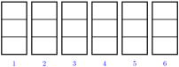

In this section we review the rules for operations on fractions and see how to apply those rules to algebraic fractions. The focus of the discussion will be to sharpen algebraic skills and improve understanding of the reasoning behind them.
Subsection8.3.1Products of Fractions
To multiply two fractions together, we multiply their numerators together and then multiply their denominators together.
To see why this rule works, consider an example. Suppose you make a chocolate cake for the Math Club bake sale, but at the end of the day \(\dfrac{4}{5}\) of the cake is left in the pan. The remaining cake is shown in figure (a).
You decide to take \(\dfrac{2}{3}\) of the remaining cake home, and give the rest to your math professor. You cut the remaining cake into thirds, as shown in figure (b). How much of the original cake are you taking home? Your share is
If you look at figure (b), you can see that you are taking home 8 pieces of cake, and that the original cake would have had 15 pieces of the same size. This means that your share is \(\dfrac{8}{15}\) of the original cake.
There is a shortcut for multiplying fractions that allows us to reduce the answer before we multiply. We do this by dividing out any common factors in a numerator and a denominator. For example,
Why does this rule for division work? Consider a simple example, \(6 \div \dfrac{1}{3}\text{.}\) This quotient asks us "how many one-thirds are there in six?" To see the answer, we can draw six whole units as shown below, and split each into thirds.

Because there are 3 thirds in each whole unit, we find \(6 \times 3\text{,}\) or 18 thirds in six units. The answer is 18. Now, 3 is the reciprocal of \(\dfrac{1}{3}\text{,}\) so by using the reciprocal rule, we also find
(Hint: How many groups of two thirds can you make from six whole units?)
Thus, to divide two algebraic fractions, we take the reciprocal of the divisor (the second fraction) and then follow the rules for multiplying fractions. \(~\alert{\text{[TK]}}~~\)
Subsection8.3.3Using Factoring in Multiplication and Division
It is usually easier to cancel any common factors before multiplying. But be careful: if the numerators or denominators have more than one term, we’ll need to factor them before looking for common factors!
In the previous Example, it would be incorrect to try to cancel any terms of numerators and denominators before factoring each binomial. For example, we cannot cancel \(3x\) into \(6x\text{,}\) because they are not factors of the fractions.
We summarize the procedure for multiplying algebraic fractions as follows.
To multiply algebraic fractions:.
Factor each numerator and denominator.
If any factor appears in both a numerator and a denominator, divide out that factor.
Multiply the remaining factors of the numerator and the remaining factors of the denominator.
When working with algebraic fractions, we often leave the denominators in factored form. This makes it easier to add and subtract fractions, and to check whether they can be reducecd.
or \(\dfrac{7}{5}\text{.}\) The denominators of the terms must be the same because they tell us what kind of quantity we are adding. We can add two quantities if they are the same kind.
When we add like fractions, we add their numerators and keep their denominators the same. For example,
we first find the lowest common denominator, or LCD, for the two fractions: The smallest number that is a multiple of both 3 and 4 is 12.
Next, we use the fundamental principle of fractions to build each fraction to an equivalent one with denominator 12. First, we multiply \(\dfrac{2}{3}\) by \(\dfrac{4}{4}\text{.}\) Because \(\dfrac{4}{4}\) is equal to 1, we have not changed the value of the fraction. 4 is called the building factor for \(\dfrac{2}{3}\text{.}\) Similarly, we multiply \(\dfrac{3}{4}\) by \(\dfrac{3}{3}\text{.}\)
\begin{align*}
\dfrac{2}{3} \amp = \dfrac{2 \cdot \blert{4}}{3 \cdot \blert{4}} = \dfrac{8}{12} \amp \amp \blert{\text{The
building factor is 4.}}\\
\dfrac{3}{4} \amp = \dfrac{3 \cdot \blert{3}}{4 \cdot \blert{3}} = \dfrac{9}{12} \amp \amp \blert{\text{The building factor is 3.}}
\end{align*}
There is nothing mysterious about the building process; we are breaking up each fraction into smaller pieces of the same size so that we can add them together.
Finally, the new fractions are like fractions, and we can add them by combining their numerators.
Step 1: We find the LCD: The smallest multiple of both 6 and 15 is 30.
Step 2: We build each fraction to an equivalent one with denominator 30. The building factor for the first fraction is \(\alert{5}\text{,}\) and for the second fraction the building factor is \(\alert{2}\text{.}\)
To add unlike fractions, we must first convert them into fractions.
Building a fraction is an application of the .
The LCD is the smallest . of each denominator.
The last step in adding fractions is to .
Subsection8.3.6Finding the Lowest Common Denominator
The lowest common denominator for two or more algebraic fractions is the simplest algebraic expression that is a multiple of each denominator. If neither denominator can be factored, then their LCD is just the product of the two expressions.
Step 1: The LCD for these fractions is just the product of their denominators, \(x(x-2)\text{.}\)
Step 2: We build each fraction to an equivalent one with denominator \(x(x-2)\text{.}\) The building factor for \(\dfrac{6}{x}\) is \(\alert{(x-2)}\) and the building factor for \(\dfrac{x}{x-2}\) is \(\alert{x}\text{.}\) We multiply numerator and denominator of each fraction by its building factor.
is not \(12(18) = 216\text{.}\) It is true that 216 is a multiple of both 12 and 18, but it is not the smallest one! We can find a smaller common denominator by factoring each denominator.
\begin{align*}
12 \amp = 2 \cdot 2 \cdot 3 \amp \amp \blert{\text{This denominator has the most factors of 2.}}\\
18 \amp = 2 \cdot 3 \cdot 3 \amp \amp \blert{\text{This denominator has the most factors of 3.}}
\end{align*}
To find a number that both 12 and 18 divide into evenly, we need only enough factors to cover each of them. In this case two 2’s and two 3’s are sufficient, so the LCD is
The factor \((x-1)\) occurs once in the first denominator, the factor \(x\) occurs once in the second denominator, and the factor \((x+1)\) occurs once in each denominator. Therefore we include in our LCD one copy of each of these factors. The LCD is \(x(x-1)(x+1)\text{.}\)
Caution8.3.20.
In the previous Example, we do not include two factors of \((x+1)\) in the LCD. We need only one factor of \((x+1)\text{,}\) because \((x+1)\) occurs only once in each denominator. You can check that each original denominator divides evenly into our LCD, \(x(x-1)(x+1)\text{.}\)
Subsection8.3.7Adding and Subtracting Unlike Fractions
After finding the LCD, we build each fraction to an equivalent one with the LCD as its denominator. The new fractions will be like fractions, so we can combine their numerators.
Building a fraction is an application of the fundamental principle of fractions,
It is the opposite of reducing a fraction, because we multiply, rather than divide, the numerator and denominator by an appropriate factor. To find the building factor, we compare the factors of the original denominator with those of the desired common denominator.
Step 2: We build each fraction to an equivalent one with the LCD as its denominator. The building factor for \(\dfrac{x-4}{x(x-2)}\) is \(\alert{(x+2)}\text{.}\) We multiply the numerator and denominator of the first fraction by \(\alert{(x+2)}\text{:}\)
Do not reduce the built-up fractions in Step 3 -- you will just get back to the original problem. When adding fractions, we have to make the fractions "harder" before we can combine them. Don’t reduce until the last step of the problem.
Recall that the formulas for rational functions are algebraic fractions. It is often useful to simplify the formula for a function before using it.
Example8.3.26.
When estimating their travel time, pilots must take into account the prevailing winds. A tail wind adds to the plane’s ground speed, while a head wind decreases the ground speed. Skyhigh Airlines is setting up a shuttle service from Dallas to Phoenix, a distance of 800 miles.
Express the time needed for a one-way trip, without wind, as a function of the speed of the plane.
Suppose there is a prevailing wind of 30 miles per hour blowing from the west. Write expressions for the flying time from Dallas to Phoenix and from Phoenix to Dallas.
Write an expression for the round trip flying time with a 30-mile-per-hour wind from the west, as a function of the plane’s speed. Simplify your expression.
Recall that \(\text{time} = \dfrac{\text{distance}}{\text{rate}}\text{.}\) If we let \(r\) represent the speed of the plane in still air, then the time required for a one-way trip is
\begin{equation*}
t = f(r) = \dfrac{800}{r}
\end{equation*}
On the trip from Dallas to Phoenix the plane encounters a head wind of 30 miles per hour, so its actual ground speed is \(r-30\text{.}\) On the return trip the plan enjoys a tail wind of 30 miles per hour, so its actual ground speed is \(r+30\text{.}\) Therefore, the flying times are
\begin{gather*}
\text{Dallas to Phoenix:}~~~\dfrac{800}{r-30}\\
\text{Phoenix to Dallas:}~~~\dfrac{800}{r+30}
\end{gather*}
The round-trip flying time from Dallas to Phoenix and back is
A rowing team can maintain a speed of 15 miles per hour in still water. The team’s daily training session includes a 5-mile run up the Red Cedar River and the return downstream.
Express the team’s time on the upstream leg as a function of the speed of the current.
Write a function for the team’s time on the downstream leg.
Write and simplify an expression for the total time for the training run as a function of the current’s speed.
For Problems 65–68, write algebraic fractions in simplest form.
65.
The dimensions of a rectangular rug are \(\dfrac{12}{x}\) feet and \(\dfrac{12}{x-2}\) feet.
Write and sinplify an expression for the area of the rug.
Write and sinplify an expression for the perimeter of the rug.
66.
Colonial Airline has a commuter flight between Richmond and Washington, a distance of 100 miles. The plane flies at \(x\) miles per hour in still air. Today there is a steady wind from the north at 10 miles per hour.
How long will the flight from Richmond to Washington take?
How long will the flight from Washington to Richmond take?
How long will a round trip take?
Evaluate your fractions in parts (a)-(c) for \(x=150\)
67.
Two pilots for the Flying Express parcel service receive packages simultaneously. Orville leaves Boston for Chicago at the same time Wilbur leaves Chicago for Boston. Each pilot selects an air speed of 400 miles per hour for the 900-mile trip. The prevailing winds blow from east to west.
Express Orville’s flying time as a function of the wind speed.
Write a function for Wilbur’s flying time.
Who reaches his destination first? By how much time (in terms of wind speed)?
68.
Francine’s cocker spaniel eats a large bag of dog food in \(d\) days, and Delbert’s sheep dog takes 5 fewer days to eat the same size bag.
What fraction of a bag of dog food does Francine’s cocker spaniel eat in one day?
What fraction of a bag of dog food does Delbert’s sheep dog eat in one day?
If Delbert and Francine get married, what fraction of a bag of dog food will their dogs eat in one day?
If \(d=25\text{,}\) how soon will Delbert and Francine have to buy more dog food?